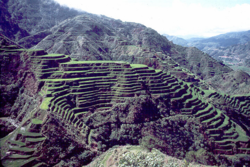
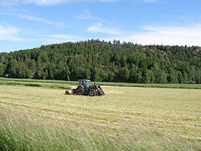
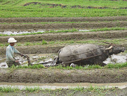

Роль сельского хозяйства в экономике

Большинство развитых стран считает поддержку сельхозпроизводителей приоритетом в аграрной политике. В странах Евросоюза в последние годы уровень финансирования сельского хозяйства составил 300 долларов США на 1 гектар сельхозугодий, в Японии — 473 долл./га, в США — 324 долл./га, в Канаде — 188 долл./га, в России — 10 долл./га. Совокупная бюджетная поддержка производителей от стоимости валовой сельскохозяйственной продукции в экономически развитых странах составляет 32-35 %, однако в России и развивающихся странах — не более 7 %.

Роль сельского хозяйства в экономике страны или региона показывает её структуру и уровень развития. В качестве показателей роли сельского хозяйства применяют долю занятых в сельском хозяйстве среди экономически активного населения, а также удельный вес сельского хозяйства в структуре валового внутреннего продукта. Эти показатели достаточно высоки в большинстве развивающихся стран, где в сельском хозяйстве занято более половины экономически активного населения. Сельское хозяйство там идёт по экстенсивному пути развития, то есть увеличение продукции достигается расширением посевных площадей, увеличением поголовья скота, увеличение числа занятых в сельском хозяйстве. В таких странах, экономики которых относятся к типу аграрных, низки показатели механизации, химизации, мелиорации и др.
Наиболее высокого уровня достигло сельское хозяйство развитых стран Европы и Северной Америки, вступивших в постиндустриальную стадию. В сельском хозяйстве там занято 2-6 % экономически активного населения. В этих странах «зелёная революция» произошла ещё в середине XX века, сельское хозяйство характеризуется научно-обоснованной организацией, повышением производительности, применением новых технологий, систем сельскохозяйственных машин, пестицидов и минеральных удобрений, использованием генной инженерии и биотехнологии, робототехники и электроники, то есть развивается по интенсивному пути.

Подобные прогрессивные изменения происходят и в странах, относящихся к типу индустриальных, однако уровень интенсификации в них ещё значительно ниже, а доля занятых в сельском хозяйстве выше, чем в постиндустриальных.
При этом в развитых странах наблюдается кризис перепроизводства продовольствия, а в аграрных наоборот, одной из острейших проблем является продовольственная проблема (проблема недоедания и голода).
Развитое сельское хозяйство является одним из факторов безопасности страны, так как делает её менее зависимой от других стран. По этой причине сельское хозяйство поддерживается и субсидируется в развитых, индустриальных странах, хотя с экономической точки зрения более выгодно было бы завозить продукты из менее развитых государств.
Доля сельского хозяйства в экономике России 2002-2015 гг.
| Годы | Производство ВВП, млр.руб. | Сельское хозяйство в % к ВВП |
|---|---|---|
| 2002 | 10831 | 5,30 |
| 2005 | 21610 | 4,54 |
| 2008 | 41277 | 3,60 |
| 2011 | 59698 | 3,26 |
| 2013 | 71055 | 3,19 |
| 2014 | 77893 | 3,48 |
| 2015 | 80413 | 3,95 |